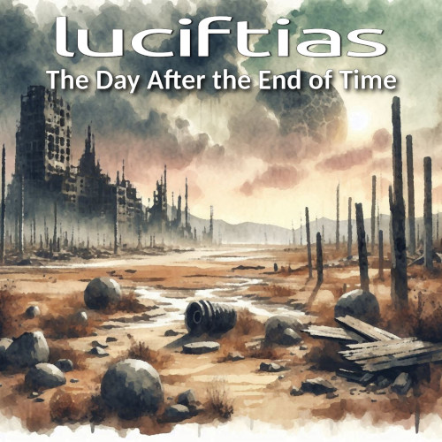

New Album Release!
The Day After the End of Time
New EP now available from Eg0cide Productions, Bandcamp and Funkwhale.
This release is a bit unusual for two reasons. First, the tracks are generally shorter in nature than much of my work and second, it's an EP. The former came about quite naturally while the latter was suggested by the owner of Eg0cide Productions upon hearing three of the four tracks.
I was inspired to experiment with no-input mixing after listening to various works by Failure Circle. Of course, the source material got the Luciftias treatment which resulted in the decidedly minimalist audio on the EP. The last piece to be added was created by pushing what can be done with the output from the image2sound utility I'm developing.